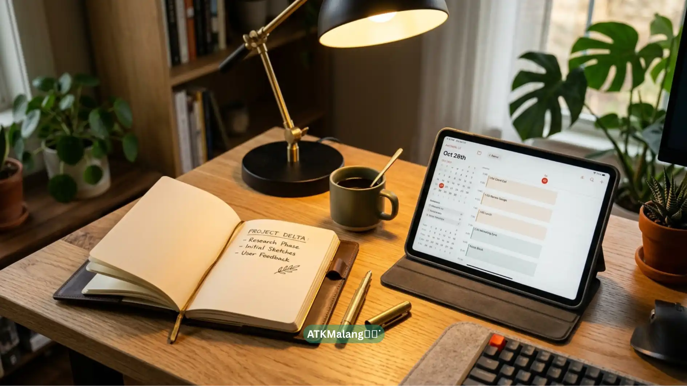

Bekerja dari rumah (Work From Home) kini menjadi kebiasaan baru bagi banyak profesional. Agar tetap produktif dan bersemangat, memiliki setup meja kerja yang nyaman dan estetik adalah sebuah keharusan. Ruang kerja yang berantakan seringkali menjadi sumber stres dan kebingungan. Mari tata ulang meja kerja Anda dengan ide-ide berikut!
Daftar Isi
Pencahayaan yang Tepat
Pencahayaan adalah kunci utama ruang kerja estetik. Usahakan meja Anda dekat dengan jendela untuk mendapatkan cahaya alami matahari. Jika Anda sering lembur malam, gunakan lampu meja dengan cahaya putih hangat (warm white) agar mata tidak cepat lelah saat menatap layar komputer.
Kursi Kerja Ergonomis
Estetika tidak ada gunanya jika mengorbankan kesehatan punggung. Pilihlah kursi kerja ergonomis dengan bantalan penyangga lumbal dan material mesh (jaring) untuk sirkulasi udara yang baik. Pastikan tinggi kursi memungkinkan kaki Anda menapak rata di lantai.
Manajemen Kabel Rapi
Kabel yang bergelantungan akan langsung merusak keindahan setup Anda. Gunakan pengikat kabel (cable ties) atau kotak penyembunyi kabel (cable management box). Meja yang bebas kabel akan memberikan kesan minimalis, luas, dan menenangkan (zen) saat Anda bekerja.
Organizer ATK Estetik
Peralatan tulis seperti pulpen, stapler, sticky notes, dan penjepit kertas harus mudah dijangkau namun tidak berserakan. Gunakan wadah kayu, akrilik bening, atau rak mini tingkat untuk menyimpannya. ATK yang terorganisir bukan hanya memanjakan mata, tapi juga menghemat waktu Anda dalam mencari barang.

Gunakan organizer yang sesuai dengan tema warna ruangan kerja Anda.Sentuhan Tanaman Hias
Jangan lupa meletakkan pot tanaman hias mini di sudut meja. Sukulen, kaktus, atau monstera mini bisa menjadi pilihan. Warna hijau dari tanaman terbukti dapat menyegarkan mata dari kelelahan akibat terlalu lama menatap layar (screen fatigue).